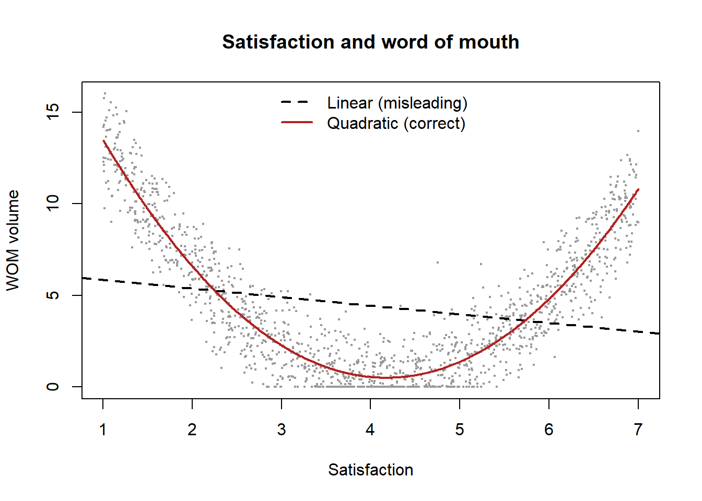

flowchart LR MSG["Persuasive message:<br/>the same advertisement"] --> CEN["Central route:<br/>scrutiny of argument quality"] MSG --> PER["Peripheral route: surface cues—<br/>source attractiveness,<br/>number of arguments, music"] INV["Involvement:<br/>perceived personal relevance"] -.->|"high"| CEN INV -.->|"low"| PER CEN --> ATT["Attitude"] PER --> ATT
8 Engagement, Involvement, and Word of Mouth
The constructs so far have described the consumer as an evaluator (Chapter 6), a relationship partner (Chapter 5), and a brand-identifier (Chapter 7). This chapter turns to the consumer as a participant—someone whose contribution to a firm extends past the purchase to include attention, effort, advocacy, content, and referrals. Three constructs organize this participatory turn. Involvement is the motivational state—the personal relevance of an object that determines how much cognitive effort a consumer will expend on it. Engagement is the set of behavioral and psychological manifestations of an active relationship that go beyond transactions. And word of mouth (WOM) is the social output—the informal communication about products and brands that consumers direct at other consumers, and that has become, in the digital era, the most consequential and most measurable of the three.
These constructs have moved from the periphery of marketing to its center as firms have recognized that a customer’s value is not exhausted by what they buy: a customer who writes reviews, refers friends, and defends the brand creates value through channels that transaction data alone cannot see. We develop involvement first, as the motivational antecedent and a moderator that reshapes how all persuasion works; then customer engagement, including its decomposition into a total engagement value; then word of mouth as a construct distinct from the mechanics of diffusion treated in Chapter 27. As throughout this part, the measurement subtext is discriminant validity: engagement, involvement, participation, and WOM-intention are easy to define apart and hard to keep apart in data.
8.1 Involvement
Involvement is a person’s perceived relevance of an object based on inherent needs, values, and interests (Zaichkowsky 1985). It is a motivational construct: high involvement means the object matters to the consumer, which mobilizes attention, information search, and elaboration; low involvement means it does not, so decisions are made with minimal cognitive effort. Zaichkowsky (1985) develops the Personal Involvement Inventory to measure it reflectively, and the construct is standardly partitioned along two axes—enduring involvement (a stable interest in a category) versus situational involvement (temporarily heightened by a purchase occasion or risk), and by object (product, advertising, and purchase-decision involvement).
Involvement’s theoretical importance is less as an outcome than as a moderator of how persuasion operates. The Elaboration Likelihood Model (Petty, Cacioppo, and Schumann 1983) holds that persuasion travels two routes: a central route, in which highly involved consumers scrutinize the quality of an argument, and a peripheral route, in which uninvolved consumers respond to surface cues (source attractiveness, number of arguments, music) without evaluating substance. Involvement determines which route dominates, so the same advertisement persuades through different mechanisms depending on the audience’s involvement—a result that reshapes advertising strategy (Chapter 13) and that makes involvement a prerequisite variable for almost any study of message effects. Figure 8.1 sketches the two routes and involvement’s gatekeeping role between them.
8.1.1 Involvement as a moderator of message effects
The ELM’s central prediction is an interaction: argument quality matters more for high-involvement consumers, while peripheral cues matter more for low-involvement consumers. The chunk simulates this crossover and recovers the two interactions, illustrating why a study that ignores involvement will estimate an average message effect that describes no actual consumer.
Code
set.seed(1983)
n <- 4000
involvement <- rbinom(n, 1, 0.5) # 1 = high, 0 = low
arg_quality <- rnorm(n) # strength of the message's arguments
periph_cue <- rnorm(n) # attractiveness/number of cues
# High-involvement: persuasion via argument quality (central route).
# Low-involvement: persuasion via peripheral cues.
attitude <- 0.10 +
0.55 * involvement * arg_quality + # central route (only when involved)
0.10 * (1 - involvement) * arg_quality +
0.50 * (1 - involvement) * periph_cue + # peripheral route (only when uninvolved)
0.10 * involvement * periph_cue +
rnorm(n, sd = 0.8)
fit <- lm(attitude ~ arg_quality * involvement + periph_cue * involvement)
co <- round(summary(fit)$coefficients[, c("Estimate", "Pr(>|t|)")], 3)
# Show the main effects and their involvement interactions (robust to term naming).
keep <- grepl("arg_quality|periph_cue", rownames(co))
print(co[keep, ])
#> Estimate Pr(>|t|)
#> arg_quality 0.079 0
#> periph_cue 0.511 0
#> arg_quality:involvement 0.492 0
#> involvement:periph_cue -0.404 0The positive arg_quality:involvement interaction and the negative periph_cue:involvement interaction are the ELM crossover: involvement routes persuasion. An analyst who omitted involvement and regressed attitude on argument quality alone would recover a muddy average, understating the central route for the involved and missing the peripheral route for the uninvolved entirely.
8.2 Customer Engagement
Customer engagement generalizes the relationship beyond the transaction. Doorn et al. (2010) define customer engagement behaviors (CEBs) as a customer’s behavioral manifestations toward a firm, beyond purchase, that result from motivational drivers—writing reviews, making recommendations, helping other customers, blogging, and otherwise contributing. Brodie et al. (2011) give the construct its conceptual domain, framing engagement as an interactive, co-creative experience with a focal object that comprises cognitive, emotional, and behavioral dimensions and that arises within an iterative process of relationship development. Hollebeek (2011) develops the brand-specific version. The common thread is that engagement captures value-creating customer activity that purchase metrics miss, which is why it rose to prominence exactly as social media made such activity visible and abundant.
Pansari and Kumar (2017) supply the nomological network: engagement is built on a foundation of satisfaction and emotion (a relationship must be both satisfying and emotionally connected to become engaged), and it produces value through direct contributions (purchases) and indirect contributions (referrals, influence, feedback). The direct/indirect split is the conceptual bridge to a measurement program that tries to put a number on the whole of a customer’s value. Figure 8.2 assembles this nomological network.
flowchart LR SAT["Satisfaction"] --> ENG["Customer engagement:<br/>cognitive, emotional, and<br/>behavioral dimensions"] EMO["Emotional connection"] --> ENG ENG --- CEB["Engagement behaviors: writing reviews,<br/>recommending, helping other<br/>customers, blogging"] ENG --> DIR["Direct contributions:<br/>purchases"] ENG --> IND["Indirect contributions:<br/>referrals, influence, feedback"]
8.2.1 Total customer engagement value
Kumar et al. (2010) decompose a customer’s total worth into four additive components—the move that lets engagement be valued, not just described:
- Customer Lifetime Value (CLV): the discounted margin from the customer’s own purchases (the construct developed in Chapter 15).
- Customer Referral Value (CRV): value from customers acquired through this customer’s formal referrals.
- Customer Influencer Value (CIV): value from this customer’s influence on other customers and prospects through word of mouth and social spread.
- Customer Knowledge Value (CKV): value from the feedback and ideas the customer contributes to the firm.
Figure 8.3 depicts the decomposition: four distinct value sources summed into one formative index.
flowchart LR CLV["CLV: discounted margin from<br/>the customer's own purchases"] --> CEV["Total customer<br/>engagement value"] CRV["CRV: customers acquired through<br/>this customer's formal referrals"] --> CEV CIV["CIV: influence on customers and<br/>prospects via word of mouth<br/>and social spread"] --> CEV CKV["CKV: feedback and ideas<br/>contributed to the firm"] --> CEV
A customer who buys little but refers and influences many can be worth more than a heavy buyer who does neither, which is the entire point: optimizing CLV alone (Chapter 15) undervalues engaged customers and can lead a firm to fire its most valuable advocates. The decomposition is formative—the four components are distinct value sources that are summed, not interchangeable reflections of a latent engagement (Table 3.1)—so the appropriate reliability question is not internal consistency but whether the components are correctly weighted and non-overlapping. The chunk simulates a customer base and shows how rank-ordering customers by total engagement value reshuffles the priority list relative to CLV alone.
Code
set.seed(2010)
n <- 5000
# Four value components; deliberately NOT perfectly correlated, so that
# CLV alone mis-ranks customers relative to total engagement value.
clv <- rgamma(n, shape = 2, scale = 120) # own-purchase value
crv <- rgamma(n, shape = 1.2, scale = 60) * (runif(n) < .5) # referral value
civ <- rgamma(n, shape = 1.1, scale = 90) * (runif(n) < .4) # influencer value
ckv <- rgamma(n, shape = 1.0, scale = 25) * (runif(n) < .3) # knowledge value
cev <- clv + crv + civ + ckv # total engagement value
top_clv <- order(clv, decreasing = TRUE)[1:500] # top 500 by CLV
top_cev <- order(cev, decreasing = TRUE)[1:500] # top 500 by CEV
overlap <- length(intersect(top_clv, top_cev))
cat(sprintf("Correlation CLV vs total engagement value: %.2f\n", cor(clv, cev)))
#> Correlation CLV vs total engagement value: 0.86
cat(sprintf("Of the top-500 customers by CLV, only %d are also top-500 by CEV.\n", overlap))
#> Of the top-500 customers by CLV, only 349 are also top-500 by CEV.
cat(sprintf("=> %d high-engagement customers are INVISIBLE to a CLV-only ranking.\n",
500 - overlap))
#> => 151 high-engagement customers are INVISIBLE to a CLV-only ranking.A non-trivial share of the most valuable customers by total engagement value are not in the CLV top tier, so a firm that targets and rewards on CLV alone systematically neglects its referral and influence engine. Engagement, made measurable through the CEV decomposition, is the construct that corrects that blind spot.
8.3 Word of Mouth
The most-studied engagement behavior is word of mouth—informal, consumer-to-consumer communication about products and brands. It is essential to distinguish WOM-the-construct from the diffusion mechanics of Chapter 27: this chapter treats WOM as a property of consumers (their propensity to talk, the valence and volume of what they say, and its antecedents), while the virality chapter treats the network dynamics by which messages spread. As a construct, WOM is characterized by valence (positive vs. negative), volume (how much), and the gap between intention and behavior.
Its antecedents are well mapped. Anderson (1998) establishes that the satisfaction–WOM relationship is asymmetric and U-shaped: both highly satisfied and highly dissatisfied customers generate more word of mouth than indifferent ones, and the dissatisfied generate disproportionately much—the negativity that recurs throughout this book (the loss-aversion theme of Chapter 4). Brown et al. (2005) identify the drivers of positive WOM intentions and behaviors, finding commitment and identification (the constructs of Chapter 5 and Chapter 7) central. Berger (2014) synthesizes the psychology of why people talk, organizing the drivers into five functions—impression management, emotion regulation, information acquisition, social bonding, and persuasion—and the meta-analysis of De Matos and Rossi (2008) quantifies the antecedents across studies, confirming satisfaction, loyalty, commitment, perceived quality, and trust as robust drivers. WOM is thus the social output of nearly every other construct in this part. Figure 8.4 gathers these antecedents into a single map.
flowchart LR SU["Satisfaction: U-shaped and<br/>asymmetric—both tails talk,<br/>the dissatisfied loudest"] --> WOM["Word of mouth:<br/>valence, volume,<br/>intention vs behavior"] CI["Commitment and identification:<br/>drivers of positive WOM"] --> WOM META["Meta-analytic drivers: satisfaction,<br/>loyalty, commitment,<br/>perceived quality, trust"] --> WOM FUN["Five functions of talking:<br/>impression management, emotion regulation,<br/>information acquisition, social bonding,<br/>persuasion"] --> WOM
8.3.1 The U-shaped satisfaction–WOM relationship
The Anderson (1998) finding is a clean nonlinearity worth making explicit, because a linear model would conclude—wrongly—that satisfaction monotonically increases word of mouth. The chunk simulates WOM volume as a U-shaped function of satisfaction with a steeper negative arm (the dissatisfied talk more), and contrasts the misleading linear fit with the correct quadratic one.
Code
set.seed(1998)
n <- 1500
sat <- runif(n, 1, 7) # satisfaction, 1..7
center <- 4
# U-shape with a steeper negative arm; minimum WOM near the middle.
wom <- 1.2 * (sat - center)^2 +
0.9 * pmax(center - sat, 0) + # extra volume on the dissatisfied side
rnorm(n, sd = 1.5)
wom <- pmax(wom, 0)
lin <- lm(wom ~ sat)
quad <- lm(wom ~ poly(sat, 2))
cat(sprintf("Linear fit R^2 : %.3f\n", summary(lin)$r.squared))
#> Linear fit R^2 : 0.045
cat(sprintf("Quadratic fit R^2 : %.3f\n", summary(quad)$r.squared))
#> Quadratic fit R^2 : 0.881
plot(sat, wom, pch = 19, cex = 0.3, col = "grey60",
xlab = "Satisfaction", ylab = "WOM volume", main = "Satisfaction and word of mouth")
ord <- order(sat)
abline(lin, lty = 2, lwd = 2)
lines(sat[ord], predict(quad)[ord], col = "firebrick", lwd = 2)
legend("top", c("Linear (misleading)", "Quadratic (correct)"),
lty = c(2, 1), col = c("black", "firebrick"), lwd = 2, bty = "n")
The quadratic fit captures the U-shape the linear model flattens into near-nothing: word of mouth is generated at both tails of satisfaction, and the dissatisfied tail is louder. A firm reading a near-zero linear coefficient would wrongly conclude satisfaction does not drive WOM, when in fact it drives it nonlinearly and asymmetrically—the same lesson, in a new construct, that the satisfaction chapter drew about asymmetric market pricing.
8.4 Measurement and the Construct Boundary
Engagement is the construct most at risk of conceptual inflation. Because it is defined expansively—any value-creating activity beyond purchase—it threatens to absorb involvement (its motivational antecedent), participation, co-creation, loyalty (Chapter 5), and word of mouth (one of its behaviors) into an undifferentiated whole. Two disciplines keep the boundary sharp. First, distinguishing the psychological state of engagement (a motivational, cognitive-affective disposition) from engagement behaviors (the observable CEBs), and measuring each with its own indicators rather than conflating cause and manifestation. Second, recognizing that engagement value (CEV) is formative while the engagement state is reflective—applying internal-consistency reliability to the former or summative weighting to the latter is the model-misspecification error of Chapter 3. Word of mouth, similarly, must keep intention and behavior separate (the gap is large and predictable) and valence explicit (positive and negative WOM have different antecedents and opposite effects), or its measures collapse distinctions the theory depends on.
8.5 Key Takeaways
- Involvement is perceived personal relevance (Zaichkowsky 1985)—enduring vs. situational, by object—and matters chiefly as a moderator: it routes persuasion between the central and peripheral paths of the ELM (Petty, Cacioppo, and Schumann 1983), so message effects are involvement-conditional (Section 8.1.1).
- Customer engagement captures value-creating activity beyond purchase—engagement behaviors (Doorn et al. 2010) and an interactive, co-creative state (Brodie et al. 2011; Hollebeek 2011)—built on satisfaction plus emotion and producing direct and indirect value (Pansari and Kumar 2017).
-
Total customer engagement value decomposes a customer into CLV + referral + influencer
- knowledge value (Kumar et al. 2010); it is formative, and CLV-only targeting (Chapter 15) systematically undervalues engaged advocates (Section 8.2.1).
- Word of mouth is a construct of valence, volume, and intention-vs-behavior, distinct from the diffusion mechanics of Chapter 27; the satisfaction–WOM link is U-shaped and asymmetric (Anderson 1998) (Section 8.3.1), positive WOM is driven by commitment and identification (Brown et al. 2005), and the psychology of talking spans five functions (Berger 2014), with robust meta-analytic antecedents (De Matos and Rossi 2008).
- The family’s measurement discipline is to separate state from behavior and reflective from formative, and to keep WOM intention/behavior and valence explicit, on pain of the misspecification errors of Chapter 3.
8.6 Further Reading
Involvement begins with Zaichkowsky (1985) and its moderating role with the ELM of Petty, Cacioppo, and Schumann (1983). For customer engagement, read Doorn et al. (2010) for the behavioral foundation, Brodie et al. (2011) for the conceptual domain, and Pansari and Kumar (2017) for the antecedents-and-consequences synthesis, with Kumar et al. (2010) for the engagement-value decomposition (and Chapter 15 for CLV proper). On word of mouth, Anderson (1998) establishes the U-shape, Brown et al. (2005) the positive-WOM antecedents, Berger (2014) the psychology of transmission, and De Matos and Rossi (2008) the meta-analytic evidence; the diffusion side is Chapter 27. The discriminant- and specification-validity cautions are, as ever, the apparatus of Chapter 3.
Anderson, Eugene W. 1998. “Customer Satisfaction and Word of Mouth.” Journal of Service Research 1 (1): 5–17. https://doi.org/10.1177/109467059800100102.
Berger, Jonah. 2014. “Word of Mouth and Interpersonal Communication: A Review and Directions for Future Research.” Journal of Consumer Psychology 24 (4): 586–607. https://doi.org/10.1016/j.jcps.2014.05.002.
Brodie, Roderick J., Linda D. Hollebeek, Biljana Jurić, and Ana Ilić. 2011. “Customer Engagement: Conceptual Domain, Fundamental Propositions, and Implications for Research.” Journal of Service Research 14 (3): 252–71. https://doi.org/10.1177/1094670511411703.
Brown, Tom J., Thomas E. Barry, Peter A. Dacin, and Richard F. Gunst. 2005. “Spreading the Word: Investigating Antecedents of Consumers’ Positive Word-of-Mouth Intentions and Behaviors in a Retailing Context.” Journal of the Academy of Marketing Science 33 (2): 123–38. https://doi.org/10.1177/0092070304268417.
De Matos, Celso Augusto, and Carlos Alberto Vargas Rossi. 2008. “Word-of-Mouth Communications in Marketing: A Meta-Analytic Review of the Antecedents and Moderators.” Journal of the Academy of Marketing Science 36 (4): 578–96. https://doi.org/10.1007/s11747-008-0121-1.
Doorn, Jenny van, Katherine N. Lemon, Vikas Mittal, Stephan Nass, Doreeén Pick, Peter Pirner, and Peter C. Verhoef. 2010. “Customer Engagement Behavior: Theoretical Foundations and Research Directions.” Journal of Service Research 13 (3): 253–66. https://doi.org/10.1177/1094670510375599.
Hollebeek, Linda. 2011. “Exploring Customer Brand Engagement: Definition and Themes.” Journal of Strategic Marketing 19 (7): 555–73. https://doi.org/10.1080/0965254x.2011.599493.
Kumar, V., Lerzan Aksoy, Bas Donkers, Rajkumar Venkatesan, Thorsten Wiesel, and Sebastian Tillmanns. 2010. “Undervalued or Overvalued Customers: Capturing Total Customer Engagement Value.” Journal of Service Research 13 (3): 297–310. https://doi.org/10.1177/1094670510375602.
Pansari, Anita, and V. Kumar. 2017. “Customer Engagement: The Construct, Antecedents, and Consequences.” Journal of the Academy of Marketing Science 45 (3): 294–311. https://doi.org/10.1007/s11747-016-0485-6.
Petty, Richard E., John T. Cacioppo, and David Schumann. 1983. “Central and Peripheral Routes to Advertising Effectiveness: The Moderating Role of Involvement.” Journal of Consumer Research 10 (2): 135. https://doi.org/10.1086/208954.
Zaichkowsky, Judith Lynne. 1985. “Measuring the Involvement Construct.” Journal of Consumer Research 12 (3): 341–52. https://doi.org/10.1086/208520.